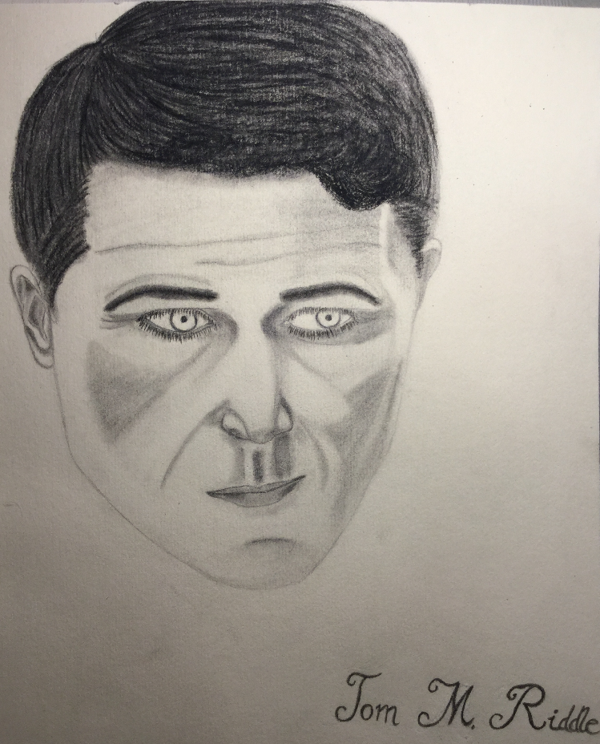

Epilogue

Lucius was beginning to deeply regret agreeing to pass along the boy’s message. At the time, it had seemed a harmless enough role, but as he traversed the short distance between his lord’s Floo room and the grand reception hall in which Riddle took his callers, there was a feeling of disquiet growing louder in his gut.
Lucius was often the bearer of news, being his lord’s right hand in most matters, and frequently the news was much worse than what he had to relate that day, but the source of the message combined with its tone… well, he would have to couch the missive carefully, wouldn’t he?
The door to the reception hall was always open. It was so Lord Riddle could see clearly anyone foolish enough to loiter outside in hesitation or fear. Lucius knew better; to show fear was to give that fear power. He was not such a fool. He strode through the doors with studied diffidence, approached to precisely halfway down the delicate silk carpet that ran the length from the doors to Riddle’s throne, and bent double in a bow that ached along his spine more than he’d care to admit. Perhaps it was time to resume his erstwhile dueling practice. He was much too young to be feeling the effects of aging so acutely.
The countless candles hovering about the room sent shadows, restless and flickering as the candles themselves, dancing across the floor below him. He narrowed his eyes against the sight. The candles wavered and shifted in such a way that the shadows they produced could easily make an unsuspecting wizard dizzy with vertigo. He had seen it happen to many a would-be sycophant.
“Rise, Lucius. Approach me,” Riddle said lazily. “What news from Hogwarts—has there truly been a death on Dumbledore’s watch?” There was deep amusement and anticipation in Riddle’s face. Lucius felt at once disturbed by the obvious glee the powerful man’s eyes revealed and gratified that he should be so trusted as to be shown his lord’s honest inclinations.
The emerald-studded throne was as gilded and gaudy as ever, Lucius thought on his approach. It never ceased to add a certain ironic levity to his interactions with his lord. He knew that others who sought an audience with Lord Riddle would take it just the opposite—a grand statement of the man’s power and wealth. Lucius knew Riddle better than that.
“Grave news indeed,” Lucius told the dark-haired politician, relishing the interest that glinted in Riddle’s eyes. This was the advantage of being the news-bearer, no matter how unfortuitous the information sometimes was. Good or bad, he was assured his lord’s undivided attention. “Hogwarts has regrettably lost a fine educator to the maw of death : one Peter Pettigrew, odious in life, yet unexpectedly useful in demise.”
Riddle smirked, and it transformed one side of his face into a landscape pocked and dipped in shadow. “It amazes me how Fate at times steps in and solves a problem with such alacrity and precision that I could not have arranged matters better myself. What of the jewel? I presume either Dumbledore or the Ministry has cloistered the object for further study—not that the fools will get very far. If it’s the old man, I’m almost tempted to let him keep it. Imagine, Lucius, the damage that might result were the venerable Headmaster to suddenly desire power to the detriment of all else. It would certainly make things interesting once more, don’t you think?”
“I’m sure it would, my lord,” Lucius said carefully. “Unfortunately, the jewel is no more.”
“Say again?” Riddle slowly straightened in his throne. “You do not know where it is, perhaps?”
“It was destroyed, I believe,” Lucius said evenly. “My contacts have affirmed that the Ministry believes it gone for good. The Department of Mysteries is quite up in arms over the loss of such an ancient power source, apparently.”
“Impossible,” Riddle snapped. “Dumbledore must have got to it first. He has it hidden.”
“An eyewitness account says otherwise,” Lucius said, a delicate cough allowing him to avert his gaze from Lord Riddle’s furious glare.
“Whose account?” Riddle sneered.
Lucius took a slow breath, wondering how much his lord wanted to know. The burning impatience in the powerful man’s eyes said everything. “They have kept it from the papers in order to preserve the boy’s privacy, but Pettigrew’s death was not the accident the Ministry is portraying it. My son has written to me, telling me what little he knows of the circumstances and after much persuasion I was able to acquire a copy of the official report. The Aurors have classified it, but I have many connections in the Department of Magical Law Enforcement—”
“Yes, yes.” Riddle cut across him. “Get to it, Lucius. I will praise your efforts later.”
Lucius bowed his head shortly. “Of course. Rigel Black was—”
A furious curse broke from Lord Riddle’s lips and magic expanded tangibly into the air around him. “Of course that brat is involved.” After visibly collecting himself, he gestured impatiently for Lucius to continue.
“Yes, well, Mr. Black has been involved longer than you might think. He apparently discovered the jewel’s presence at Hogwarts independently, and took it upon himself to… watch Pettigrew carefully.”
“How could he possibly have sussed out the jewel’s presence? Only we were aware of Pettigrew’s mission in Egypt. The goblins knew the bare facts of its existence, and the Department of Mysteries may have guessed at some of its powers, once they were informed of the investigation, but no one could have guessed that Pettigrew of all people would have it.” Riddle drummed his long fingers on the arm of his chair in a swift roll. “Did Snape—” The politician cut himself off before he could make an accusation he might regret.
“The report suggested the boy had some contact with a member of the Gringotts team assigned to locate the jewel,” Lucius offered. “Between that and the access he had to his uncle’s less than discreet investigatory style, the boy was purportedly able to gather enough information to make a series of unlikely guesses that turned out to be exactly correct.”
“Clever fool,” Riddle muttered. “He is all that is wrong with this new generation. Consorting with Weasleys. Sticking his nose into the business of his elders. Fumbling his way through intricate webs with all the grace of a blind hippogriff. They forget how far we have come, how much we have sacrificed for their sake. That will change. Soon, they will be reminded of the duty they owe their own and of the filth that lingers never far from the palace of privilege we have build for them.” Riddle trailed into silence, lines of thought etched into his brow. Lucius stood silent, patient, and attentive. Within moments, his lord was speaking again. “So the boy dived into waters that turned out too deep, did he? I suppose Pettigrew became aware of Mr. Black’s attention.”
“Perhaps,” Lucius allowed. “Pettigrew certainly took note of the boy. He took him hostage—an ill-considered scheme to either silence him or exploit the boy’s power, I believe. The boy was… damaged considerably in captivity, according to the attached medical records.”
“How long?” Riddle asked, looking perturbed. “The rumours I’ve heard tell only of Pettigrew’s sudden demise. There is no mention of a protracted incident.”
“I am not certain,” Lucius said. He hated to admit to not knowing something, but even his best sources had not been able to uncover this detail. “Large sections of the report were classified above the level of the common Auror, even. The spellwork over the report suggests the involvement of the Department of Mysteries. In any case, certain details are irrevocably obscured.”
“The very fact of its concealment tells me all I need to know,” Riddle said, eyes alight with deep fascination. “There was a Time-Turner involved in this affair.”
“Surely not the boy’s…” Lucius was more than a little incredulous. You couldn’t just purchase a Time-Turner, after all.
“You think Pettigrew was afforded the privilege?” Riddle sneered. “Doubtful. But a young boy, studious, hardworking, responsible, with the favour of his Head of House and abilities bound to catch Dumbledore’s eye? Oh yes, I can see such a thing transpiring. You say the boy is damaged; how apparent is it? Is he changed? It might have been a long imprisonment, depending on the strength of the Time-Turner he was given.”
Lucius felt a bit sick imagining such a thing happening to a boy his son’s age, but he swallowed his discomfort with the ease of long practice. “He hides his emotional state well, but the flawless nature of his performance is revealing in itself. There is something changed, something that disturbs the boy himself enough to stringently conceal it. What that may be, I cannot say. He functions eerily well, even looking up from a hospital bed.”
“You visited him,” Riddle said, a sly taunt in his voice.
“Naturally,” Lucius said easily. “My son considers Mr. Black his closest companion. My family owes him a debt of life, as well. Ignoring his recent tribulations would be unconscionable.”
“House Malfoy never forgets its debts, is that not so?” Riddle said idly.
“Never,” Lucius said, frowning. Was his lord questioning his loyalty? Lucius did not forget to whom he owed much of his current prominence.
“Good,” Riddle said. There was a musing quality to his voice. “We need Rigel Black on our side, Lucius. He has too many connections to the Light side of society. We must bring him closer into the fold. We must do this quickly—before he grows too independent to control.”
Lucius was of the opinion that it was a little late for that—the boy seemed incredibly independent to him. More so than Draco, he had to grudgingly admit. How strange, when what he knew of Lord Black would have him expect an entirely relaxed style of upbringing to have been Rigel’s lot. What had made the boy so frustratingly headstrong? He supposed it didn’t matter why. Lord Riddle would have his hands full trying to control the loyalties of the Black scion, at any rate.
“I will do what I can to foster the relationship between young Mr. Black and our more loyal Party supporters,” Lucius said after a moment of contemplation. He knew Riddle did not want to hear that the boy was likely intractably attached to the Light already.
“We may need to distance him from Severus, as well,” Riddle said softly.
Lucius could not stop the surprise that flickered in his eyes. “I’m not certain such a course would be… possible, at this point, my lord.” Not to mention the sheer unwiseness involved in attempting to separate Severus from his long-awaited protégé.
“Anything is possible,” Riddle said, flicking his fingers dismissively. “I can see your worry—it won’t come back on us, however. I will arrange it as a matter of circumstance. Severus will not suspect.”
Lucius fervently hoped that was the case. He and Severus shared mutual respect and admiration that had over time solidified into a strong friendship, but that bond would not save Lucius from the Potions master’s ire should the man discover that Lucius had been party to meddling in his mentorship.
“Returning to the point—what became of the jewel, Lucius? I presume Mr. Black had something to say about its sudden disappearance,” Riddle prompted.
“He told the Aurors that Pettigrew and the jewel in effect destroyed one another,” Lucius related. “The reports indicate some sort of power struggle—unsurprising considering Pettigrew’s general ineptitude. The boy was knocked unconscious at some point—most of this section is blacked out by DOM security spells—and when he woke Pettigrew was dead and the stone disintegrated.”
“It sounds more like the boy does not know what happened to the jewel,” Riddle mused. “Still, the powers of the stone do not include teleportation, as far as I am aware. If it was simply not there following Pettigrew’s demise, it is possible that a clash of magic caused some sort of recoil powerful enough to destroy the artifact.” Riddle frowned slightly, drumming his fingers once more. “These vagaries displease me. Speak to Rookwood and see if you can’t squeeze a few details around his Unspeakable oaths.”
“I will owl him this evening,” Lucius agreed.
“At least the Ministry does not have the jewel,” Riddle said, his chest rising and falling in what was almost a sigh. “It’s my own fault for entrusting the task to that rat. If my animagus form were smaller…”
Lucius privately felt the same. That the rat had been sent on such a valuable and important mission was galling. He would have to see about seeking animagus training in the near future. It was said to be prodigiously difficult, but if Pettigrew could do it… well, there was no need for him to allow another to usurp a task he could do himself. It would only make him more valuable in his lord’s eyes.
He could see Riddle’s attention turning inward, and knew that the window for relaying the message from Rigel Black was growing smaller. Soon Riddle would be in no mood for discussion. He would want to retire to his study to consider the changes that had occurred in the political landscape with a teacher found dead on Hogwarts grounds.
Lucius cleared his throat softly and met Riddle’s expectant eyes with a self-deprecating grimace. “I have been tasked by young Mr. Black to relate a message to you the next time our paths crossed.”
“Put you to work, has he? My, how bold the snakelet grows,” Riddle commented. Suddenly a light of triumph entered the other man’s eyes. Riddle began to chuckle low, and Lucius wondered what he found funny about the situation, exactly. Lucius often carried such messages to his lord, and there was certainly nothing demeaning about it. “So he’s finally reconsidered my offer. Cutting it a bit close, but I suppose better late than never.” Riddle laughed again. “I can teach him proper manners given enough time.”
Lucius was getting that uncomfortable feeling again, this time for a different reason. “My lord, I fear that this may not be the message you were expecting…”
Riddle frowned as the amusement bled from his mouth. “Tell me.”
Lucius reminded himself firmly that Lord Riddle had yet to shoot a loyal messenger. “It is in two parts. The first : he wishes you to know that Pettigrew was your loyal servant, and had no intention of betraying you before he obtained the jewel. Black says the jewel was a corrosive influence on Pettigrew’s mind from the very first and that the artifact erased any motives that conflicted with its drive to control and subjugate, including any impetus Pettigrew may have had originally to bring the jewel to you.”
Riddle’s lips tightened. “The boy assumes much. How did he come to discover that the hand moving Pettigrew toward the Dominion Jewel was mine?”
“I don’t know,” Lucius said. “Perhaps Pettigrew let it slip at some point while he held the boy captive.”
“How did the rat even manage such a thing? Rigel Black has more than enough power to escape any prison he might devise.” Riddle curled his lip derisively. “No doubt the child was too frightened to use it. There is more to the message?”
“Yes,” Lucius said. It was the next part that he dreaded. “He says…” Lucius cleared his throat when it closed around the words. “He says he forgives you.”
“What was that?” Riddle’s hissing tone was a warning Lucius wished he could heed.
“He says he… forgives you… for sending Pettigrew to get the jewel and inadvertently involving Hogwarts in another of your…” Lucius gulped. “Reckless power plays.” Riddle was deadly silent. Lucius rushed on, figuring it was best to get it all out at once. “He says he assumes you had no idea what would happen, but asks that, as your inability to foresee the outcome of your own plans has become a pattern, in the future you not make long term plans at all.”
Riddle’s face turned corpse-white and it was a long, still moment before he began to breathe again. Lucius watched somewhat mistrustfully as a cold smile crept with brittle edges across Riddle’s face. “Impertinent whelp. If he disapproves of my circumspection, we shall see what he makes of my more direct plans. He will learn just which side he is on, one way or another. This fantasy of his—the neutrality, the sympathy for his poorer-blooded relations, the rejection of his birthright—it ends shortly.”
Lucius said nothing. He was certain he did not want to get in the way of whatever sinister machinations Riddle was now mulling through. He regretted that such a bright boy had got on Lord Riddle’s bad side, but Riddle was, as usual, in the right of it. The Black scion had no business cozying up to Light-sided ideals. Whatever his father’s aberrance, the House of Black was still expected to do its political duty. The boy’s uncle and aunts could not be expected to uphold the Black prestige on their own indefinitely. Rigel was mature and intelligent; it was time he bore a grown wizard’s responsibility. He only hoped for Draco’s sake that the boy acknowledged his path before Riddle attempted to force him onto it. A clash between the two of them would not end well for the boy. And if they worked together… Lucius let himself imagine for a moment a bright future. Rigel Black, carefully groomed to stand at his lord’s side, influential and engaging, just as Riddle himself was. Draco, there beside him, Rigel’s second in every matter, as Lucius was to Lord Riddle. The next generation rising gracefully to take the place of those who’d paved the way before them. Lucius sitting in his wife’s tea room, looking out over a grassy lawn, where a fair-haired child played carelessly with the garden fairies.
He retreated from this image slowly, reluctant to let it go, but realistic enough to recognize that such a future was a long ways off, if indeed his line should be so blessed. For now, there were plans to make. He had an appointment with Ludovic Bagman shortly, and the blustery man was prone to restless nervousness if left to wait too long.
He left his lord to his thoughts and retired to the hall.
End

Table of contents
- The Pureblood Pretense by Violet Matter
- The Serpentine Subterfuge by Violet Matter
- The Ambiguous Artifice by Violet Matter
-
The Futile Façade by murkybluematter
- Cover
- Title Page
- Summary
- 1. Healing
- 2. Correspondence
- 3a. Seifer's Solution
- 3b. The Free Dueling Tournament
- 4. The Quidditch World Cup
- 5. Acknowledgement
- 6. Allegiances
- 7. Negotiations
- 8a. Weighing of the Wands
- 8b. The Forbidden Forest
- 9. Blood Wards
- 10a. Freebrewing
- 10b. The Rod of Zuriel
- 11. Champion of Charity: Rigel Black Gives Back
- 12. Ascending
- 13. The Final Task
- Who is RBC?
- Epilogue